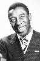

Country:United States, 118 minutes
Spoken languages:
Genres:Family, Adventure
Director(s):Carroll Ballard
Writer(s):Walter Murch, Melissa Mathison, William D. Wittliff, Jeanne Rosenberg, Walter Farley
Video Codec:Unknown
Number: 1015


Certification:G
Storyline:
While traveling with his father, young Alec becomes fascinated by a mysterious Arabian stallion that is brought on board and stabled in the ship he is sailing on. When it tragically sinks both he and the horse survive only to be stranded on a deserted island. He befriends it, so when finally rescued both return to his home where they soon meet Henry Dailey, a once successful trainer. Together they begin training the horse to race against the fastest ones in the world.
Cast: 

Medium: Original DVD,
Loaned: No
Aspect ratio: Unknown